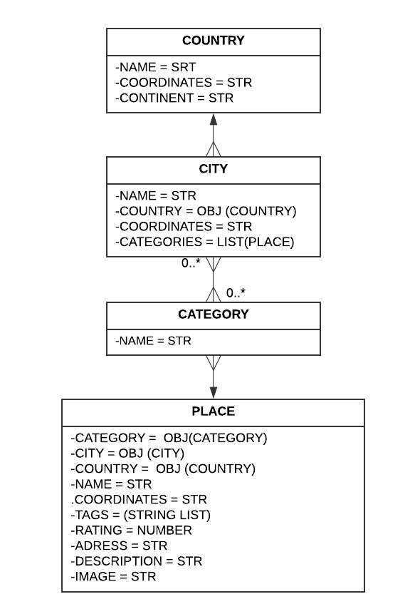

This document provides instructions on how to use the VIPTop10 API, make requests, and handle validations. The API allows you to retrieve information about categories, countries, cities, and places, and provides filtering and recommendation features.

.env extension in the root directory of the project..env file and update the necessary variables:DATABASE_USER=<database-user>
DATABASE_PASSWORD=<database-password>
PORT=<port-number>
API_KEY_GOOGLE_MAPS=<google-maps-api-key>
API_KEYS_AUTHORIZED=<authorized-api-keys>Replace <database-user>,<database-password>, <port-number>, <google-maps-api-key>, and <authorized-api-keys> with the actual values for your environment.
If the .env file doesn't export the variables correctly, you can manually export them by running the following commands in the terminal (replace <value> with the actual value for each variable):
export DATABASE_USER=<value>
export DATABASE_PASSWORD=<value>
export PORT=<value>
export API_KEY_GOOGLE_MAPS=<value>
export API_KEYS_AUTHORIZED=<value>Make sure to export the variables correctly to ensure the project works as expected.
secure_protocol.sh to generate the SSL certificate files.bash secure_protocol.shThis script will generate the SSL certificate files (server.key and server.cert) and move them to the SSL_Certificates directory.
Please note that the generated key and certificate are suitable for development purposes only. In a production environment, you should obtain a trusted SSL certificate from a certificate authority (CA) to ensure secure communication with the API.
npm installnpm run tscnpm startThe API will be accessible at https://localhost:<port>/api.
.txt extension in the root directory of the project..txt file and update the necessary variables:DATABASE_USER=<database-user>
DATABASE_PASSWORD=<database-password>
PORT=<port-number>
API_KEY_GOOGLE_MAPS=<google-maps-api-key>
API_KEYS_AUTHORIZED=<authorized-api-keys>Replace <database-user>,<database-password>, <port-number>, <google-maps-api-key>, and <authorized-api-keys> with the actual values for your environment.
secure_protocol.sh to generate the SSL certificate files.bash secure_protocol.shThis script will generate the SSL certificate files (server.key and server.cert) and move them to the SSL_Certificates directory.
Please note that the generated key and certificate are suitable for development purposes only. In a production environment, you should obtain a trusted SSL certificate from a certificate authority (CA) to ensure secure communication with the API.
docker build -t top10 .docker run --env-file <your-file.txt> -p <host-port>:<container-port> top10Replace <host-port> with the desired port number on your host machine and <container-port> with the corresponding port number specified in the .txt file (usually 5000).
The API will be accessible at https://localhost:<port>/api.
The API exposes the following endpoints:
Here are some examples of how to make requests to the API endpoints:
{
"city": "New York",
"category": "Restaurant"
}To ensure secure access to the API, the API Key validation middleware is implemented. The API Key must be included in the Authorization header of the request.
If the API Key is missing or invalid, you will receive a 401 Unauthorized response.
{
"error": "Unauthorized"
}The API handles errors and returns appropriate HTTP status codes and error messages in the response. The possible error status codes include:
400 Bad Request: Indicates invalid request parameters or missing required fields. This can occur if the request is not properly formatted or if required data is missing.401 Unauthorized: Indicates that the request requires authentication, and either no credentials were provided or the provided credentials are invalid.404 Not Found: Indicates that the requested resource could not be found. This can occur if the specified endpoint or resource does not exist.503 Service Unavailable: Indicates that the server is currently unable to handle the request due to a temporary overload or maintenance. This can occur if there are issues connecting to the database.500 Internal Server Error: Indicates that a server error occurred. This can occur due to various reasons, such as unexpected exceptions or issues with the server infrastructure.When consuming the API, make sure to handle these errors appropriately in your client application. You can inspect the HTTP status code of the response to determine the type of error that occurred. Additionally, the response may include an error message that provides more information about the specific error.
It's recommended to handle different error scenarios in your client application and provide meaningful feedback to the user based on the encountered errors.
The available countries, cities, and categories are these:
Countries:
Cities:
Categories:
The VIPTop10 API provides a comprehensive set of endpoints to retrieve information about categories, countries, cities, and places. You can use the API to filter and recommend places based on specific criteria. Make sure to follow the installation steps to set up the API locally or using Docker. Refer to the API endpoints section for details on the available endpoints and request examples. Handle errors appropriately in your client application and provide meaningful feedback to the user. Enjoy using the VIPTop10 API and have fun exploring top-rated places around the world!